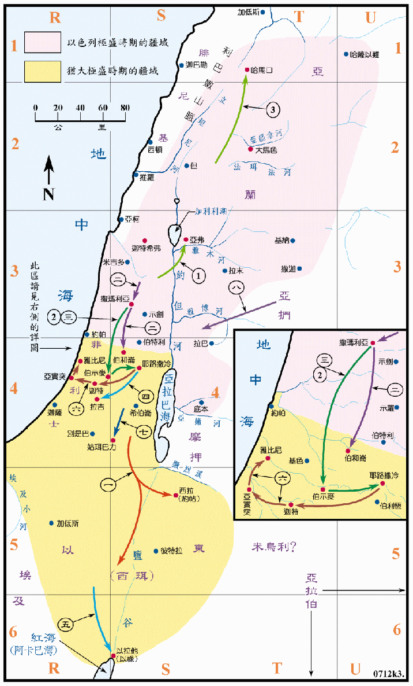

800～740BC

| 国 | 王 |
|---|---|
| 犹大国 | 亚玛谢 (犹大王九 797～769BC) |
| 亚撒利雅 (犹大王十 769～741BC) | |
| 以色列国 | 约阿施 (以色列王十二 799～784BC) |
| 罗波安 (以色列王十三 784～753BC) | |
| 迦利雅 (以色列王十四 753～752BC) | |
| 沙龙 (以色列王十五 752～751BC) | |
| 先知 | 约拿 (785～775BC) |
| 阿摩司 (760～750BC) |
行动线说明
犹大王亚玛谢
| 序号 | 圣经 | 说明 |
|---|---|---|
| 王下14:1-5，代下25:1-3 | 亚玛谢作王廿九年，他行神眼中看为正的事，只是不专诚，他杀了他父亲的臣仆。 | |
| 一、 | 王下14:7，代下25:5-16 | 亚玛谢组织了三十万的大军，攻打以东，占领了西拉，并改名约帖。他带回西珥的神像，立为自己的神，因此耶和华的怒气向他发作。 |
| 二、 | 代下25:13 | 亚玛谢所遣回的十万以色列人，攻打犹大各城从撒玛利亚直到伯和仑。 |
| 三、 | 王下14:8-14，代下25:17-24 | 亚玛谢向约阿施挑战，他在伯示麦被以色列人击败，约阿施来到耶路撒冷，拆毁城墙四百肘，又将圣殿和宫中的宝物取去，并带走人质。 |
| 四、 | 王下14:19-21，代下25:27 | 有人背叛，亚玛谢逃到拉吉，但仍被杀。他的儿子亚撒利雅 (又名乌西雅) 接续他作王。 |
犹大王亚撒利雅（在历代志中作乌西雅）
| 序号 | 圣经 | 说明 |
|---|---|---|
| 王下15:1-，代下26:1-5 | 亚撒利雅十六岁登基，作王五十二年 (前廿四年与他的父亲共治，后十二年与他的儿子共治)，他行耶和华眼中看为正的事，只是邱坛没有废去。 | |
| 五、 | 王下14:22，代下26:2 | 亚撒利雅收回以拉他 (即是以禄) 仍归犹大，又重新修理。 |
| 六、 | 代下26:6 | 他出去攻击非利士人，拆毁了迦特、雅比尼和亚实突等城，在非利士人中及亚实突境内，又建 了些城，神帮助他攻击非利士人。 |
| 七、 | 代下26:7 | 亚撒利雅攻击住在姑珥巴力的亚拉伯人，并米乌利人。 |
| 八、 | 代下26:8 | 亚扪人给亚撒利雅进贡，他的名声传到埃及和远方，因他甚是强盛。 |
| 代下26:9-15 | 他在耶路撒冷的角门和谷门并城墙转弯之处，建坚固的城楼，又使巧匠作机器安在城楼上，又在旷野与高原和平原建望楼，挖了很多井。 | |
| 王下15:5-7，代下26:16-21 | 后来亚撒利雅因强盛而心高气傲，以致行事邪僻，耶和华降灾与王，他长大麻疯。他的儿子约坦代他治理国事，直到死日，死后约坦接续作王。 |
以色列王约阿施
| 序号 | 圣经 | 说明 |
|---|---|---|
| 王下13:10-12 | 约阿斯登基，作以色列王十六年，他行耶和华眼中看为恶的事。 | |
| 1 | 王下13:25 | 约阿斯仍照先知以利沙在死前向他作的预言，三次打败亚兰王便哈达，收回了原来他父在哈薛手中失去的城邑。 |
| 2 | 王下14:8-14，代下25:17-24 | 犹大王亚玛谢向约阿施挑战，在犹大的伯示麦交战，犹大人大败，约阿施来到耶路撒冷，拆毁城墙四百肘，又将殿里和王宫中的金银器皿，并人质带回撒玛利亚。 |
以色列王耶罗波安
| 序号 | 圣经 | 说明 |
|---|---|---|
| 3 | 王下14:23-28 | 约阿施的儿子耶罗波安接续作王四十一年，他收回以色列边界之地，从哈马口直到亚拉巴海，正如先知约拿所说的，他又将大马色和先属犹大的哈马夺回归以色列。 |
以色列王撒迦利雅
| 序号 | 圣经 | 说明 |
|---|---|---|
| 王下15:8-10 | 耶罗波安的儿子撒迦利雅接续他作以色列王六个月，雅比的儿子沙龙在百姓前击杀了他，篡了他的位。 |
以色列王沙龙
| 序号 | 圣经 | 说明 |
|---|---|---|
| 王下15:13 | 沙龙在撒玛利亚篡位，作王一个月，迦底的儿子米拿现从得撒上撒玛利亚，杀了沙龙，篡了他的位。 |
在此六十年间，可说是自王国分裂以来最盛的时期。在南方，犹大的两个王均行耶和华眼中看为正的事，国势日强，又逢埃及衰败，无力侵扰以色列地，因此犹大收复以东，击败非利士、亚拉伯、米乌利和亚扪等人，使他们进贡，犹大国的名声就传到埃及和远方。在北方，以色列国在约阿施王时，曾三度击败亚兰，收复了一些失土。又在耶罗波安 (二世) 四十一年的统治下，再度击败了亚兰，领土往北直扩张到了哈马口，他的确为北国带来繁荣和财富，但也使得人民生活奢糜，道德低落，宗教腐败，种下灭亡的恶果。先知阿摩司此时传下神的警告，但收效不大。自七世纪初起，亚述已日渐壮大，在北方与亚兰争雄，亚兰渐被制，在亚述的威胁下，已无力与以色列抗争。